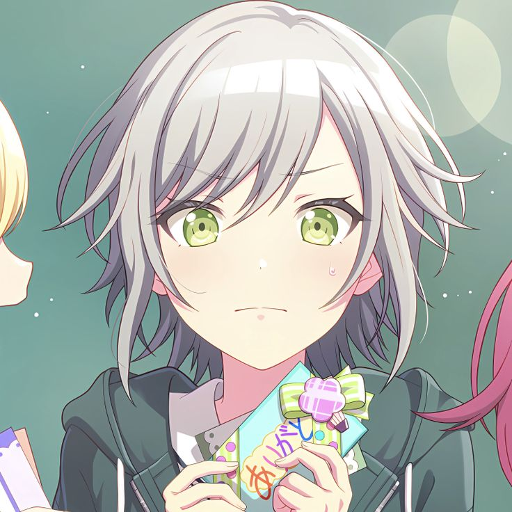
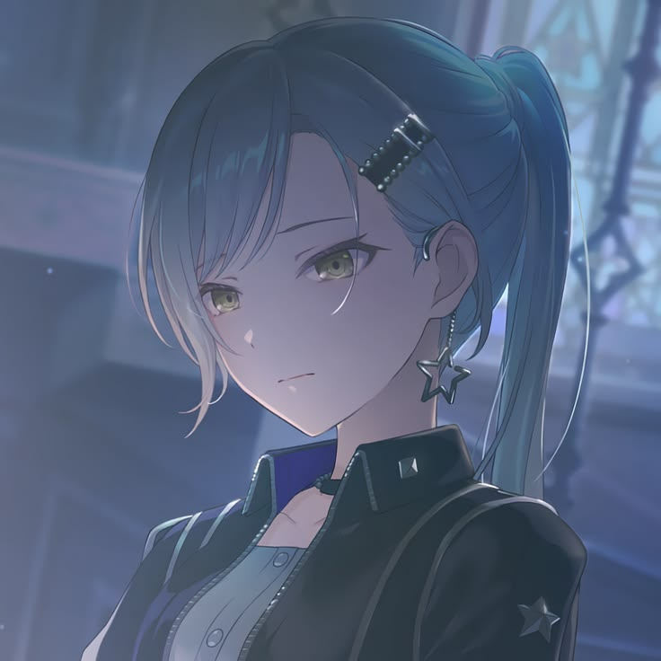

Leo/need's bassist. She is determined about music and is often misunderstood due to being a lone wolf who dislikes clinginess. Shiho deeply cares for her band members, alongside who she has chased and achieved the dream of becoming professional musicians.
here are shiho fun facts:
Shiho's bass is modeled after a Fender American Elite Jazz Bass (Ebony, Ocean Turquoise).
She plays a pet-raising game on her phone, although she is sometimes embarrassed about it, possibly because cute things clash with her tough girl image.
Shiho is a big fan of Phenny, the mascot of Phoenix Wonderland, and actively collects Phenny merchandise. In a spring menu line, she expressed frustration over not being able to buy the limited edition Phenny plushie immediately due to having to be at school.
Her voice actress, Nakashima Yuki, also plays the bass guitar.
When newscasters on TV say hello, Shiho nods back to them.


Shiho's animation in the results screen was updated in the game's v3.8.1 update, making her the only character to have an altered animation.
According to the Japanese school year, Shiho is the youngest Leo/need member.
This also suggests that she is 16 years old since the Brand New World update, along with Kohane.